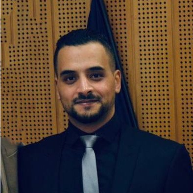

Etant actuellement à la recherche d’un autre emploi , je me permets de vous proposer mon profil.
Dans l’espoir de rejoindre vos équipes, j’aimerais vous proposer mes services.
Plus de détails sur mon Linkedin.

Mon domaine de compétences est vaste, j’ai travaillé dans différents secteurs, qu’il s’agisse de l’informatique, Gestionnaire Back Office litige carte chez AVEM, manager chez carrefour Market, manager d’inventaires, en laboratoire d’analyses médicales ou agroalimentaires.
Ces diverses expériences m’ont permis d’acquérir certaines connaissances et autonomie dans beaucoup de secteur d’activité et aussi l’occasion de développer mes capacités d’adaptation et ma polyvalence.
Avisé, Rigoureux, Volontaire et possédant un très bon esprit d’équipe, je peux apporter à votre entreprise mes compétences obtenues au cours de ces années.
Date de naissance:
20 Août, 1988
Age:
36 Ans
Website:
Email:
Portable:
Ville:
Cournon D'auvergne, Auvergne-Rhône-Alpes , France
Français
Arabe
Anglais
2023
De Juillet 2023 à Aout 2023
OpenClassrooms, et Mind Luster Développement web, Comprendre le web.
Créez votre site web avec HTML5 et CSS3, JavaScript.
2016
De septembre 2015 à mai 2016
Université BLAISE PASCAL Clermont-Ferrand.
2015
De septembre 2012 à juin 2015
L'Université DJILALI BOUNAAMA de Khemis Meliana Algérie.
Lettres et langues étrangères.
Validé en France le 19/06/2023 par Enic Naric (équivalant licence en didactique du français langue étrangère).
Filière : langue Française.
Spécialité : didactique du français langue étrangère.
2012
De septembre 2011 à juin 2012
Le Centre Universitaire de Tissemsilet Algérie.
Branche : Droit.
Spécialité : Etat et institutions.
2011
De septembre 2008 à juin 2011
L’Institut National Spécialisé en Microbiologie de Blida Algérie.
Validé en France le 13/02/2018 par Enic Naric (équivalant BTS contrôle de qualité, biologie, chimie).
Filière : biologie, microbiologie (Contrôle de qualité).
Spécialité : biologie, microbiologie.
Depuis Janvier - 2024
AVEM , Clermont Ferrand
Contrôler les dossiers transmis par les banques clientes.
Vérifier la confirmité et la complétude du dossier.
Collecter les éléments complémentaires nécessaires.
Instruire le dossier et traiter les demandes.
Vérifier la recevabilité des demandes.
Emettre , le cas échéant , les opérations bancaires de dénouement.
Renseigner les demandeurs, les banques et caisses regionales.
Septembre - Octobre 2023
Movianto , Cournon d'auvergne
Entrer les donnees en base de donnees interne de l'entreprise.
Préparation logistique des colis VIATRIS de pélevements pharmaceutiques internationnaux et locaux.
Réalisation des prélèvement qualitatifs pharmaceutiques (DMF) selon le cahier de charge.
Gérer les stocks de service qualité sur FlexFlow.
Analyser la conformité des documentations de lots par rapport aux dossiers d’autorisation de mise sur le marché en vue de la commercialisation des produits et les envoyer au laboratoire.
Collecte et analyse des résultat de conditions de transport (data logger, température...)
Juin - Août 2023
Carrefour Market , Riom
Formation caroline, portail market et les différents logiciels de carrefour market (Carla, Game, Pricer, Caromobile, Adiplan, Syster...).
Gérer le stock et manager les équipe sur les différentes tâches ;
Mise en rayons, déstockage et la rotation.
Implantation des rayons.
Manutention avec le gerbeur et transpalette.
Novembre 2018 - Juin 2023
RGIS SPÉCIALISTES EN INVENTAIRE , Clermont Ferrand
Déplacement sur les lieux de missions (la nuit).
Manager les équipes.
Responsable d’inventaire (superviseur).
Intégration et formation des nouveaux compteurs.
Encadrement, Evaluation et suivi des compteurs.
Septembre 2017 - Novembre 2018
Limagrain , Ennezat
Contrat saisonnier 09/2017-11/2017 et 09/18 -11/18
Préparation des plaques de PCR (tournesol, mais).
Tests Tétrazolium. Tests PMG.
Préparation des semis aux champs.
Vigueurs Dormance. Cinétiques.
Utilisation du LIMS (logiciels internes).
Mai 2012 - Août 2015
ÉTABLISSEMENT HOSPITALIER PUBLIC Theniet el had Algerie
PRÉLÈVEMENTS : Bactériologiques, hématologiques.
ANALYSES :
Bactériologiques : (ECBU,ECB des sels, ECB des pertes...).
Hématologiques : (FNS, CRP, VS, GS...).
Biochimiques :
(Urée, Créatinine, TP, LCR ...).
Sérologie:(Hiv, Hépatite B et C, BW...).
Séparations des poches de sang et transfusion.
INJECTIONS :
Intraveineuses, Intramusculaires, Sous cutanées. Perfusions.
Avril 2012 - Août 2015
CYBER REGINA Theniet el had Algérie
Formatage (software): Windows, Mac, logiciels de base (packoffice, word, excel ....).
Réparation (Hardware) : CPU, RAM, carte graphique, ventilateurs... .
Récupération de données perdues.
Installation du réseau interne (Easycafe Tinasoft).
Des bases, et en cours d'apprentissage.
Bonne maitrise de Word, Excel, Powerpoint....et intermédiaire en Photoshop.
Management, Vente.
TIM , ACS , GDR , Netsize , RGIS Ngen , Winbase.
LIMS.
Carrefour Caroline , Portail Market,
Laboratoire
(microbiologie, chimie).
Lecture, Voyage.
Sport
Gymnastique
(Tumbling), Basket-ball,
Football.
Guitare
Chant
Piano
Je suis à votre service
Cournon D'auvergne Auvergne-Rhône-Alpes 63800 France.